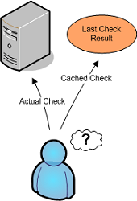
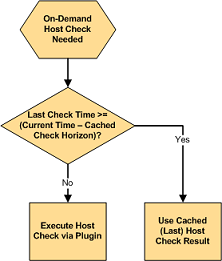
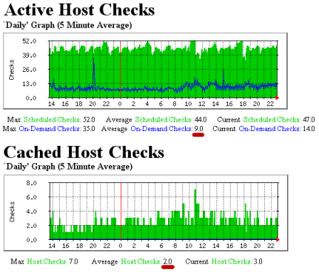

Up To: Contents
Up To: Contents
 See Also: Host Checks, Service Checks, Predictive Dependency Checks
See Also: Host Checks, Service Checks, Predictive Dependency Checks
Introduction
The performance of Nagios' monitoring logic can be significantly improved by implementing the use of cached checks. Cached checks allow Nagios to forgo executing a host or service check command if it determines a relatively recent check result will do instead.
For On-Demand Checks Only
Regularly scheduled host and service checks will not see a performance improvement with use of cached checks. Cached checks are only useful for improving the performance of on-demand host and service checks. Scheduled checks help to ensure that host and service states are updated regularly, which may result in a greater possibility their results can be used as cached checks in the future.
For reference, on-demand host checks occur...
And on-demand service checks occur...
 Note: Unless you make use of service dependencies, Nagios will not be able to use cached check results to improve the performance of service checks. Don't worry about that - its normal. Cached host checks are where the big performance improvements lie, and everyone should see a benefit there.
Note: Unless you make use of service dependencies, Nagios will not be able to use cached check results to improve the performance of service checks. Don't worry about that - its normal. Cached host checks are where the big performance improvements lie, and everyone should see a benefit there.
How Caching Works
When Nagios needs to perform an on-demand host or service check, it will make a determination as to whether it can used a cached check result or if it needs to perform an actual check by executing a plugin. It does this by checking to see if the last check of the host or service occured within the last X minutes, where X is the cached host or service check horizon.
If the last check was performed within the timeframe specified by the cached check horizon variable, Nagios will use the result of the last host or service check and will not execute a new check. If the host or service has not yet been checked, or if the last check falls outside of the cached check horizon timeframe, Nagios will execute a new host or service check by running a plugin.
What This Really Means
Nagios performs on-demand checks because it need to know the current state of a host or service at that exact moment in time. Utilizing cached checks allows you to make Nagios think that recent check results are "good enough" for determining the current state of hosts, and that it doesn't need to go out and actually re-check the status of that host or service.
The cached check horizon tells Nagios how recent check results must be in order to reliably reflect the current state of a host or service. For example, with a cached check horizon of 30 seconds, you are telling Nagios that if a host's state was checked sometime in the last 30 seconds, the result of that check should still be considered the current state of the host.
The number of cached check results that Nagios can use versus the number of on-demand checks it has to actually execute can be considered the cached check "hit" rate. By increasing the cached check horizon to equal the regular check interval of a host, you could theoretically achieve a cache hit rate of 100%. In that case all on-demand checks of that host would use cached check results. What a performance improvement! But is it really? Probably not.
The reliability of cached check result information decreases over time. Higher cache hit rates require that previous check results are considered "valid" for longer periods of time. Things can change quickly in any network scenario, and there's no guarantee that a server that was functioning properly 30 seconds ago isn't on fire right now. There's the tradeoff - reliability versus speed. If you have a large cached check horizon, you risk having unreliable check result values being used in the monitoring logic.
Nagios will eventually determine the correct state of all hosts and services, so even if cached check results prove to unreliably represent their true value, Nagios will only work with incorrect information for a short period of time. Even short periods of unreliable status information can prove to be a nuisance for admins, as they may receive notifications about problems which no longer exist.
There is no standard cached check horizon or cache hit rate that will be acceptable to every Nagios users. Some people will want a short horizon timeframe and a low cache hit rate, while others will want a larger horizon timeframe and a larger cache hit rate (with a low reliability rate). Some users may even want to disable cached checks altogether to obtain a 100% reliability rate. Testing different horizon timeframes, and their effect on the reliability of status information, is the only want that an individual user will find the "right" value for their situation. More information on this is discussed below.
Configuration Variables
The following variables determine the timeframes in which a previous host or service check result may be used as a cached host or service check result:
Optimizing Cache Effectiveness
In order to make the most effective use of cached checks, you should:
You can schedule regular checks of your hosts by specifying a value greater than 0 for check_interval option in your host definitions. If you do this, make sure that you set the max_check_attempts option to a value greater than 1, or it will cause a big performance hit. This potential performance hit is describe in detail here.
A good way to determine the proper value for the cached check horizon options is to compare how many on-demand checks Nagios has to actually run versus how may it can use cached values for. The nagiostats utility can produce information on cached checks, which can then be graphed with MRTG. Example MRTG graphs that show cached vs. actual on-demand checks are shown to the right.
The monitoring installation which produced the graphs above had:
The first MRTG graph shows how many regularly scheduled host checks compared to how many cached host checks have occured. In this example, an average of 53 host checks occur every five minutes. 9 of these (17%) are on-demand checks.
The second MRTG graph shows how many cached host checks have occurred over time. In this example an average of 2 cached host checks occurs every five minutes.
Remember, cached checks are only available for on-demand checks. Based on the 5 minute averages from the graphs, we see that Nagios is able to used cached host check results every 2 out of 9 times an on-demand check has to be run. That may not seem much, but these graphs represent a small monitoring environment. Consider that 2 out of 9 is 22% and you can start to see how this could significantly help improve host check performance in large environments. That percentage could be higher if the cached host check horizon variable value was increased, but that would reduce the reliability of the cached host state information.
Once you've had a few hours or days worth of MRTG graphs, you should see how many host and service checks were done by executing plugins versus those that used cached check results. Use that information to adjust the cached check horizon variables appropriately for your situation. Continue to monitor the MRTG graphs over time to see how changing the horizon variables affected cached check statistics. Rinse and repeat as necessary.